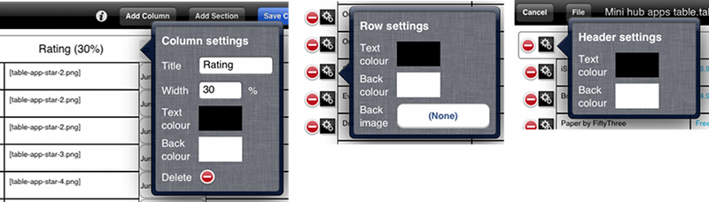

Customising Your Table
There are several ways in which you can customise the appearance of your table - text colour, background colour and row background images.
Text and background colour are set via the column, row and section settings menus. When editing for columns, just like the Title and Width settings, the colours are applied for the column in that section only. To bring up the column settings menu, click on the column in the relevant section header.
To bring up the row and section header settings menus, click on the Settings button next to the required row / section header.
Column, row and section header settings menus
To change a text / background colour, tap on the box showing the current colour to bring up a colour picker. Here you can use the hue and gradient views to choose a colour, or manually enter HSV / RGB / hex values. Use the slider at the bottom to change the opacity. You can also click on the current colour block to reset to the current colour.
Colour picker

To set a background image for a row, click on the Back image button. This will bring up a menu listing all of the image files in your issue directory. Select the image you want to use, or select No background image if you don't want a row background image.
If you set a background image for a row, then the background colour will be ignored for that row. The image will be stretched to fit inside the row.
| ◀ Row Behaviours | Up: Tables | Maps ► |